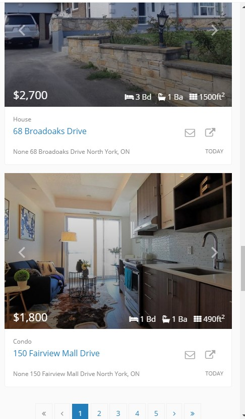
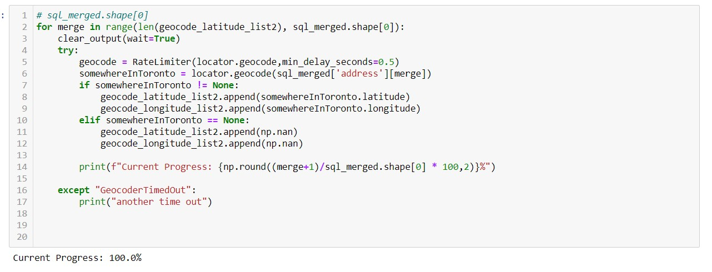
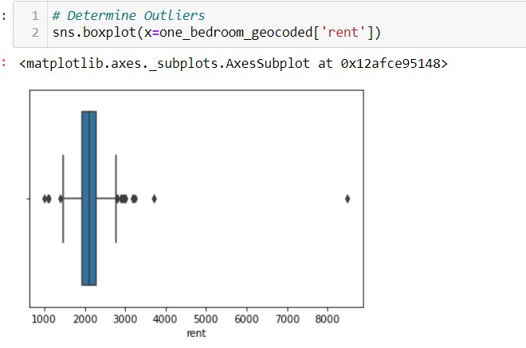
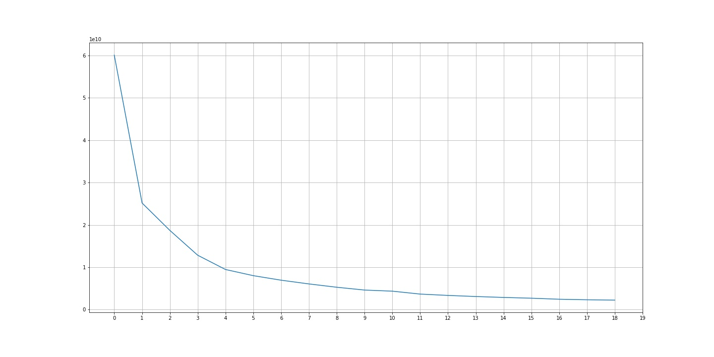

Project Findings
Introduction
The Toronto's rental market has become quite competitive in recent years due to strong immigration numbers and job growth in the tech industry. The rental prices have shot to high levels, encouraged by the people's willingness to pay in order to live closer to their workplaces. For this analysis, I want to focus on the condo one-bedroom units because they are one of the most common choice for renters.
Some of the common indicators for the price of a property includes ease of access to infrastructures. Therefore, this analysis will focus on the distance the rental property is, from subway, bus, and train stations, bus stops, shopping malls and plazas, and grocery stores. This analysis aims to discover whether the high rent in the specific locations in the city of Toronto is justified by their locations. For instance, if a highly priced property does not have any grocery stores nearby, perhaps a potential renter can look at similarly priced options at another location within Toronto, that offers a closer proximity to grocery stores.
Data Collection
I web scraped my data from https://www.torontorentals.com by looping through all the pages within my search result (one bedroom condo units). I tried using Kaggle.com for my dataset but I find most datasets to be outdated or missing specific information I need. The codes I used for scraping are located in my GitHub repository called “Toronto-condo-scrape.ipynb”. This scraped data will include the rental units' rent, address, postal code, number of bedrooms and bathrooms, and the square footage of the unit. After the web scrapping process is completed, I will use Python's Geopy library to obtain the geo coordinates of each rental property using its address.
Data Cleaning
The datatype of the scrapped data like rent, bedroom/bathroom numbers and the square footage needed to be converted to float datatype. An issue with conversions was that some numbers included ranged numbers (ie. $1750 – $2000). The data points that contained ranged numbers were deleted because I wanted to use accurate data rather than making up a number to replace the values.
Since this analysis is focused on one bedroom units, using Python’s “loc” function, I only selected the data points that only has one-bedroom.
During the data cleaning process, I checked the unique values for each column to see if there are any peculiar data. The bathroom feature contained “1/2” which needed to be replaced with “.5” first before converting the bathroom feature to float data type
The dataset was missing 942 values for the square footage of the rental units. Data points with missing data were deleted since I only had around 1900 data points to work with, replacing the 942 missing values with the average will strongly skew the data.
Foursquare APIWith Python’s Geopy library, I was able to obtain geo coordinates of the rental properties using the addresses scrapped from www.torontorentals.com. Geopy was not able to locate all coordinates which led to null values for some data points which were then deleted.
I added a new feature called price per square feet which was simply calculated by dividing the rent by the square footage of the property. Using the price per square feet feature, I calculated the outliers in the dataset. The two options used to find outliers for this analysis were to use the z-score of the dataset and the Interquartile Range(IQR). With z-scores, any numbers greater than x = 3 or less than z = -3 will be considered outliers. The Interquartile Range can be calculated using the “.quantile(0.25/0.75)” function
 Database StorageI stored the cleaned data into a local pgAdmin database for easier access in the future, as well as a sqlite database file for sharing.
Methodology
I performed a k-means clustering model on the data points on the geo map and chose to use 4 clusters to run the model. The number of clusters (K) to use was determined using the elbow test and taking the point where the distortion start to decrease in a linear fashion.
After I collected all the data, the characteristics of each clusters in relations to their characteristics are visualized on histograms. The histograms then show the number of occurrences of each features of study.
I also generated a geomap using Python’s Folium library that tells the audience the rent, rent per square feet, and the cluster number when the points are clicked on. After creating the map, further analysis was needed to find out the differences in characteristics of each clusters in relation to their features which are:
- size (sqft)
- rent
- Number of Bathrooms
- Price per sqft
- distances from the nearest metro station, train station, bus station, bus stop, shopping mall, shopping plaza, and grocery store
Histograms are then used to visualize the differences between the clusters which will be elaborated in the results section.
Results
Geomap ObservationsLooking only at the geomap, we can see that most properties within cluster zero seem to cluster around the center of cities like the downtown Toronto area and district of Etobicoke. Cluster one mostly clusters around North York, North of the city of Toronto. Cluster two groups around the Scarborough region just East of Toronto and cluster three forms a semi circle surrounding the downtown core.
Distance from shopping mall, shopping plaza, and grocery storeCluster zero have the most properties out of the four clusters that are within 5000 meters away from shopping malls and grocery stores. Properties from cluster zero, however, tend to be further away from shopping plazas, with some properties reaching out further than 20 thousand meters. This could be explained by the location of the cluster, how they are located in the heart of the cities where there are space limitations on having shopping plazas.
Rental properties in cluster one, are close to the three features (mall, plaza, grocery store). Cluster two are further away from shopping malls and closer to shopping plazas and grocery stores. Cluster three are more scattered with some properties located within 10 thousand meters from the nearest shopping plaza and some located 20 thousand meters away.
Distance from bus station, bus stop, and metro stationProperties in cluster zero are closest to the features with the features accessible within a five-kilometer radius. Rental units in cluster one, have similar characteristics as cluster zero, but units within this cluster are more likely to be relatively far away from bus stops so depending on ones needs, this may be a factor to consider.
Properties in cluster two are not as close as properties in cluster zero and one, to the transit stations. Tenants who choose to live in cluster two will mostly likely have to travel around four kilometers to arrive at the transit stations.
Finally, for cluster three, most properties in this cluster are located far away from metro stations, and relatively far away from bus stations and bus stops. This makes travelling a little more difficult for people choosing to rent within this cluster.
Price per square feetFor the bar chart we can see that properties in cluster zero have the highest average price per square feet. This could be justified by located closer to major driving factors of real estate prices which in this study, are metro stations, bus stop and bus stations.
The cluster with the second highest price per square feet is cluster three. People looking for places to rent should be careful about renting units labeled in cluster three because shopping and grocery stores as well as transit stations are far away compared to the other clusters. Properties within this cluster could be ideal for individuals with access to vehicles or one who enjoys peace and quiet.
Cluster one has the very similar characteristics as cluster zero yet their prices are the second lowest out of the four clusters. Properties in this cluster could be a great choice for someone who is willing to live outside of the downtown core for cheaper living expenses.
Cluster two is kind of in between cluster one and three. Not close to transit stations but not too far either. This cluster was shown on the geomap to be located in the Scarborough region. Cluster two is the cheapest cluster to live in however, the neighborhood quality may have to be considered, but that is outside the scope of this analysis.
Conclusion
The popular factors driving real estate prices are accessibility to transit, and shopping. This analysis looked at the distances from individual rental properties, to each of the nearest driving factors, and clustered into four groups. Each group posed their own advantages and disadvantages and this analysis will help individuals looking for places to live based on the characteristics the person is looking for. For instance, someone may work in downtown Toronto, but the rent in the area is too expensive. The person can then look at somewhere else that is cheaper, but still close enough to transit stations, that allows him/her to reach the destination.